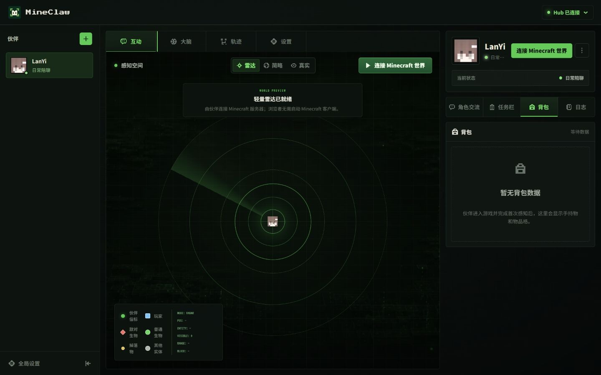

MineClaw：让 AI 伙伴走进 Minecraft
从聊天走向一个可观察的游戏世界：对话、目标、行动，以及本地控制台里的任务记录。

一个有游戏世界的 AI 伙伴
MineClaw 面向 Minecraft Java 版，让 AI 伙伴能够日常对话，并按目标在游戏中执行任务。与单纯的聊天界面相比，游戏世界提供了可以观察的环境和行动结果。
本地控制台呈现感知和任务记录，便于回看 AI 当时面对的情况、接受的目标与执行过程。
从项目说明开始
项目仍在开发中。运行前需要准备 Minecraft 服务器，并配置模型接口；它不是无需设置即可使用的成品游戏角色。
作品集中保留了当前介绍所依据的文档版本。安装方式、支持范围和后续进展，请沿着仓库入口继续阅读。
继续探索
— END —